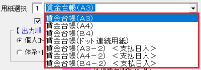
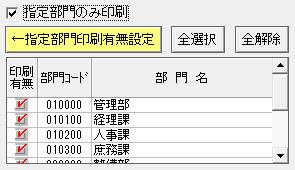
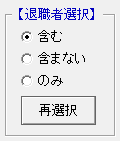
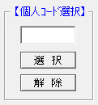
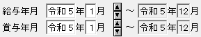
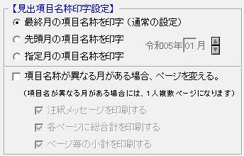

目 次
年間の賃金台帳を印刷する
一般的な賃金台帳の印刷について解説します。
{kind=link}
① 用紙を選択する
{kind=link}
賃金台帳
支給額の３か月の合計や等級変化を確認できますが、給与支払日は確認できません。
賃金台帳 ＜支払日入＞
給与支払日を確認できますが、支給額の３か月の合計や等級変化は確認できません。
※ ドット用紙について
ドット用紙は現在使用できません。
{kind=link}
③ 特定の部門のみを印刷したい場合
{kind=link}
指定部門のみ印刷を行う方法
① 画面右下の一覧から印刷したい部門を選び「印刷有無」にチェックを付けます。
② 「←指定部門印刷有無設定」をクリックします。
③ 対象者が再表示されます。
｜ポイント｜
部門コードの下４桁が「００００」の場合は大分類、下２桁が「００」の場合は中分類扱いになりますので、対象者に注意する必要があります。
④ 退職者を印刷したくない場合
{kind=link}
指定して再選択ボタンをクリックしますと、一覧の「印刷有無」が変わります。
｜ポイント｜
｜例題｜
Q： 「含まない」を選択した場合はどうなるでしょうか？
A： 退職者以外の社員の「印刷有無」にチェックがつきます。
⑤ 人数が多くて印刷したい社員を選択するのに苦労する場合
{kind=link}
ここに個人コードを入力して、選択又は解除ボタンをクリックすることで選択できます。
｜ポイント｜
｜例題｜
Q： 特定の社員のみを印刷したい場合はどうすればいいでしょうか？
A：
① 「全解除」ボタンをクリックし、全員を印刷しないようにします。
② 個人コードを入力してから「選択」ボタンをクリックすると、該当者のみ「印刷有無」にチェックが付きます。
{kind=link}
⑦ 給与と賞与の支給日を合わせて印刷したい場合
{kind=link}
以下の条件の場合の設定方法について説明します。
＜給与＞
・末締め
・翌月（１０日）払い
・当月表示
＜賞与＞
・当月２０日払い
＜共通＞
・１月から印刷
｜ポイント｜
｜例題｜
令和４年１月から印刷する場合
令和４年１月は令和４年２月１０日支給日となりますので、
給与年月を令和３年１２月にすることで、令和４年１月１０日の支給日分が印刷されます。
賞与は令和４年１月に、令和４年１月２０日支給分が印刷されます。
これで、１月１０日支給の給与と２０日支給の賞与が、１月に印刷されます。
⑧ 年度の途中で給与項目が変更された場合
{kind=link}
年度の途中で給与項目が変更となった場合の、項目名の印刷について説明します。
｜ポイント｜
｜例題｜
Q： 令和４年５月に支給項目が追加された場合はどうなりますか？
A： 通常の設定で問題ありません。
｜例題｜
Q： 令和４年５月に支給項目が削除された場合はどうなりますか？
A： 通常の設定では削除された項目名は印刷されません。先頭月を指定することで正しく印刷されます。
｜例題｜
Q： 令和４年５月に支給項目が追加されて、令和４年１０月に支給項目が削除された場合はどうなりますか？
A：
通常の設定では削除された項目名は印刷されません。又、先頭月では追加された項目名が印刷されません。
指定月を５月に設定することで正しく印刷されます。
｜例題｜
Q： 令和４年５月に支給項目が追加、令和４年７月に支給項目が削除、令和４年１０月に支給項目が追加された場合はどうなりますか？
A：
通常の設定では削除された項目名は印刷されません。又、先頭月では追加された２つの項目が印刷されません。
指定月にしても、５月ですと１０月に追加された項目が印刷されず、１０月ですと７月に削除された項目が印刷されません。
よって、どの月を指定しても全ての名称を印刷することはできません。
項目名称が異なる月がある場合、ページを変えるにチェックを付けることで、複数ページとなりますが印刷されます。
それでも１ページに印刷したい場合は、エクセル出力にて対応が可能です。